把名字還給夥伴
QuestNote UX + Visual Design Prototype 02 · 2026-10-02
Before：來源 V3.5.9 / 3a88db8。New Concept：獨立展示 Prototype。未部署。所有角色與插畫都來自現有真實 catalog。
點任一圖片可看完整解析度。主要對照為 393×852；IAB 有 15px scrollbar。Before Collection 使用與 Prototype 同六隻展示收藏，截第一組卡片，捲動距離不同。Summon／Reveal Before 為原版 source module viewer，非正式站抽取。手機原生 VoiceOver、Dynamic Type 與觸覺未實機驗證。舊版其餘截圖屬第一版延續情境；第二版新增畫面另列。
Prototype 02 · 相遇，從記住名字開始
手機首屏入口 · 現有角色招呼 · 完整十連結果


第二版 · 陪伴與重複
日常以暱稱稱呼

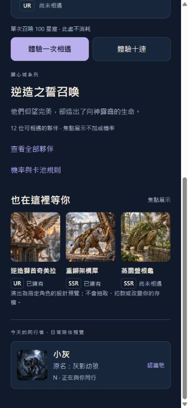
小灰是展示暱稱；公開角色畫面仍是灰影幼狼。
手記保留原名

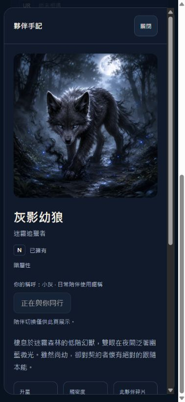
手記主標為原名，設為陪伴是明確操作，不自動替換。
滿星仍明示實際碎片

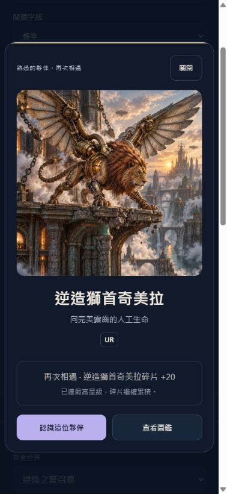
已達最高星級，碎片繼續累積；不暗示還能升星。
十張完整結果 · 下半部

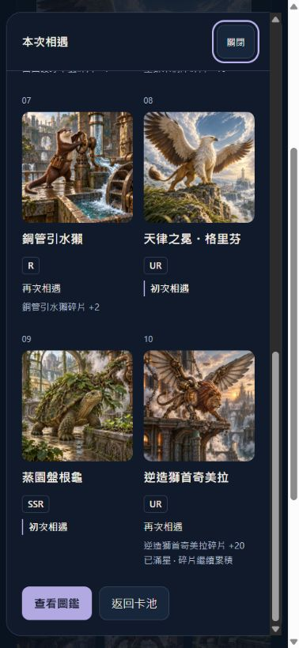
十連 · 320px / 200%

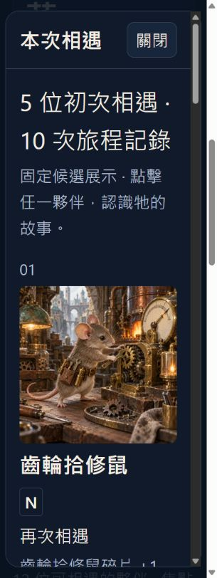
01 · Pool
原版首屏先看資源與召喚；新概念先看到完整插畫、天律之冕・格里芬與自然法則的完整形體。
Before

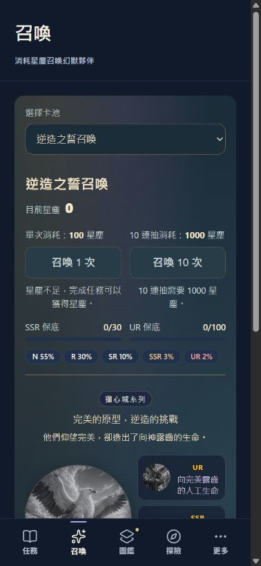
New Concept
檢視狀態：可審查；第二版標準字級首屏可見角色與 CTA；大字模式自然捲動。
02 · Summon
Before 是原版實際 themed module 的起始儀式；After 為手動鎖定的輪廓階段，檢視按鈕只屬設計 viewer。
Before

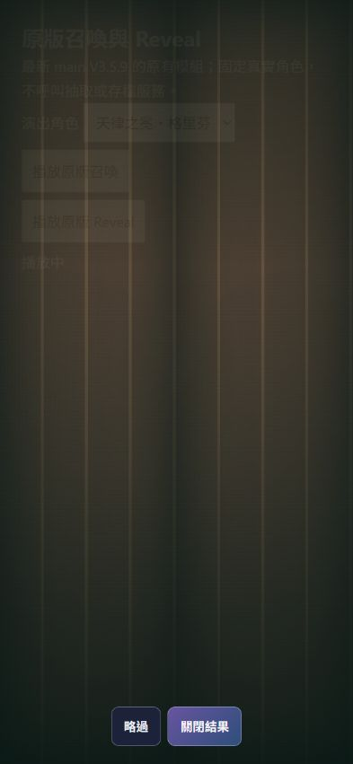
New Concept

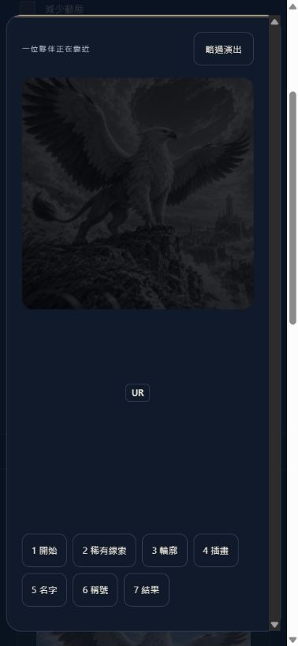
檢視狀態：短節奏、略過已驗；實機觸覺待驗。
03 · New Reveal
同一天律之冕・格里芬：原版巨大 UR 字樣，新概念以原插畫、真名及取得狀態為主。
Before

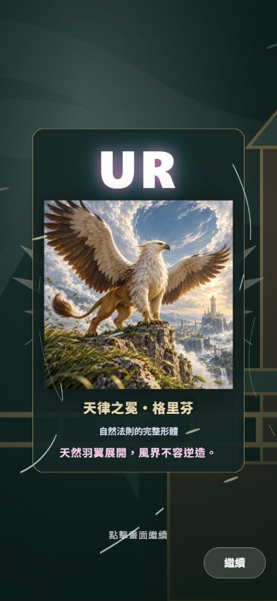
New Concept
檢視狀態：名字峰值與完整結果可審查；After 也代表減少動態的最終結果。
04 · Collection
同六隻展示收藏（第二版奇美拉設滿星情境）：原版小卡包含養成資訊與操作；新概念保留 art／name／rarity／state。未擁有不再全部失去名字。
Before

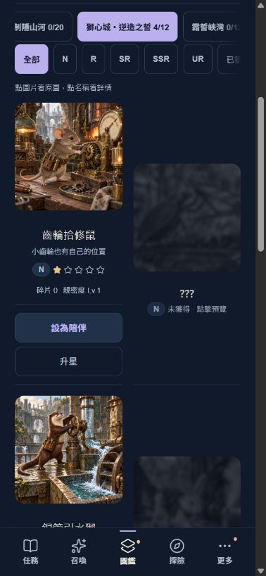
New Concept

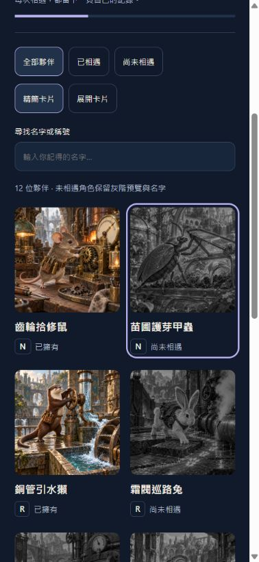
檢視狀態：Compact／Expanded 可操作；公開名字政策已確認，暱稱保留給日常陪伴。
05 · Pet Detail
同一隻未擁有角色：原版標題 ???，但長文字已提真名；新概念公開原名與短 lore，人工整理短介紹，留住親密度解鎖內容。
Before

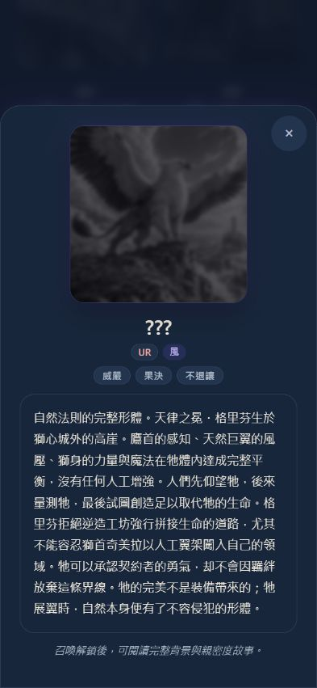
New Concept

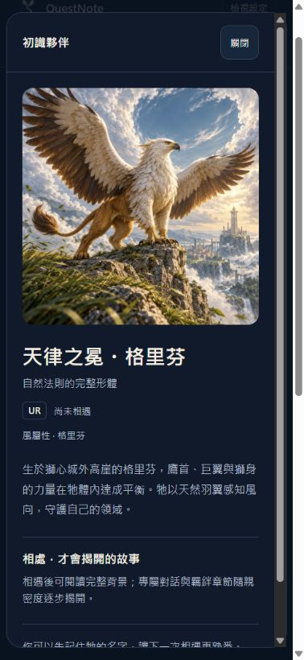
檢視狀態：公開／解鎖分界及焦點返回已檢查；VoiceOver 待實機。
完整狀態與壓力測試
池子、主角、名單、演出、新／重複結果、兩種圖鑑與詳情皆可在 Prototype 操作。
Pool Preview

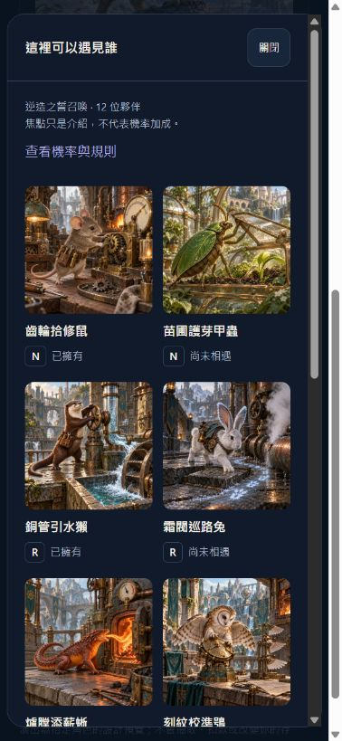
真名、縮圖、稀有度、Owned／Unowned 與焦點狀態；可點 Detail。
Probability

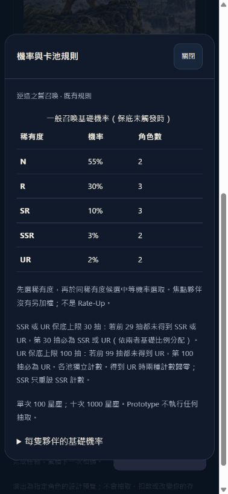
基礎率、候選數、30／100 保底與 Featured 非加權聲明。
Name Moment

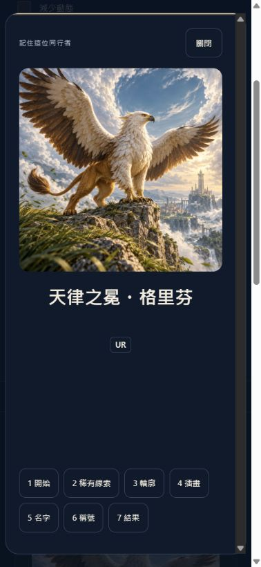
插畫先出現，名字成為峰值；稱號尚未出現。畫面含 viewer 手動控制。
Duplicate

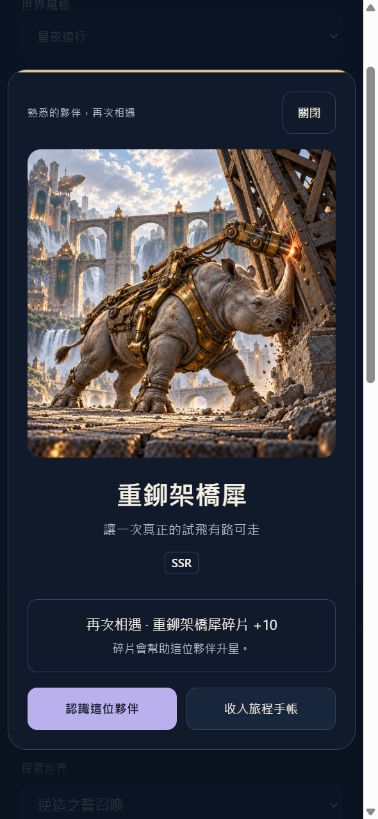
重鉚架橋犀再次相遇，該寵物碎片 +10。
Expanded Collection

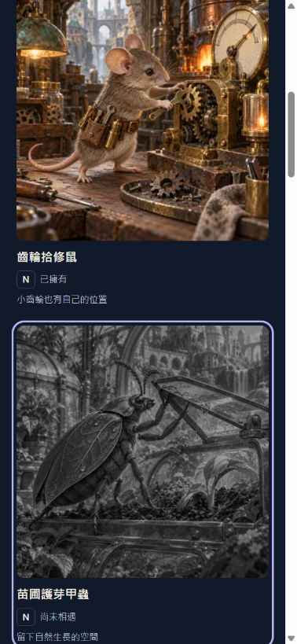
較大原圖與完整稱號；沒有小卡上的養成按鈕。
Owned Detail

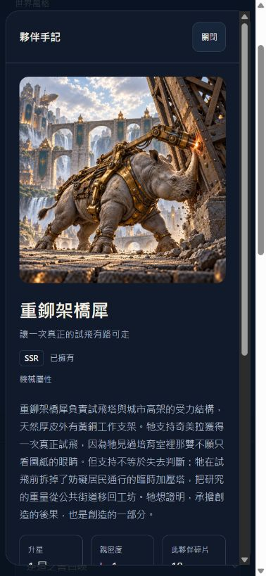
原背景、性格、親密度、星數、角色碎片進 Detail。
320px

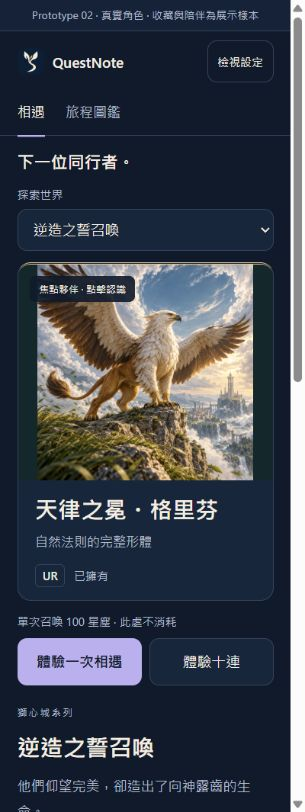
320×852 下仍有完整原名與稱號，正常字級。
2／3／4–6 字＋長名字

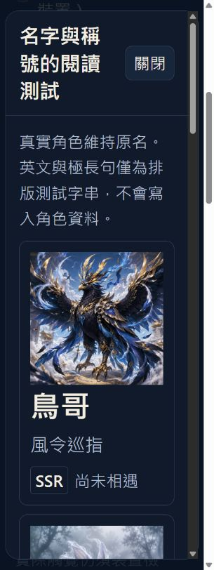
真實角色與 200% rem 字體；不縮小或省略身份。
English stress

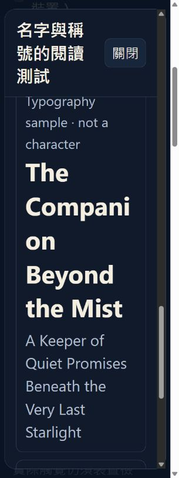
明示為排版樣本；長英文 name／title 可換行，不寫入 catalog。
三種世界風格 · 393×852
同一個角色、相同 name hierarchy；只改 palette 與既有 theme 字型語言。


三種風格 · 320px / 200% 文字
原名 24px → 48px；不 clamp、不縮小。以鍵盤 focus 將大字體角色卡帶入可視區域，因此保留 focus ring。大字模式較低密度，支援卡／圖鑑／名單自動減欄。


設計把角色本身作為獎勵；稀有度給期待，稱號給故事。真人記憶效果尚未量測。